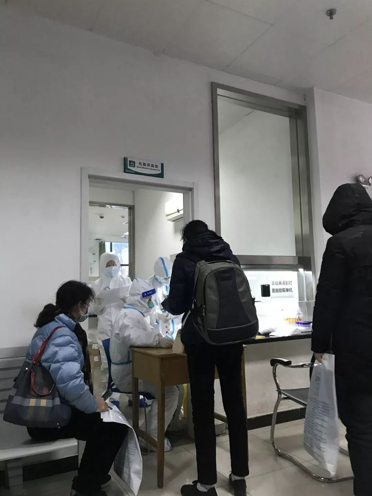
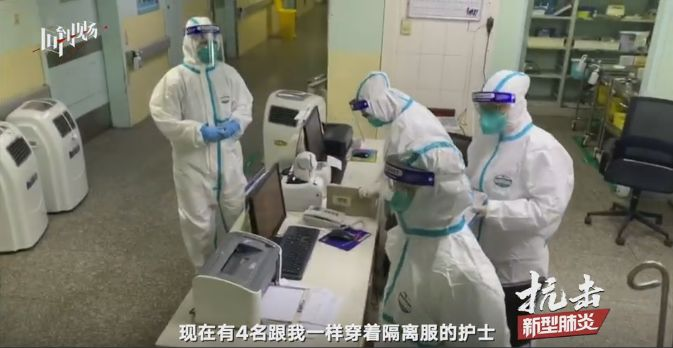
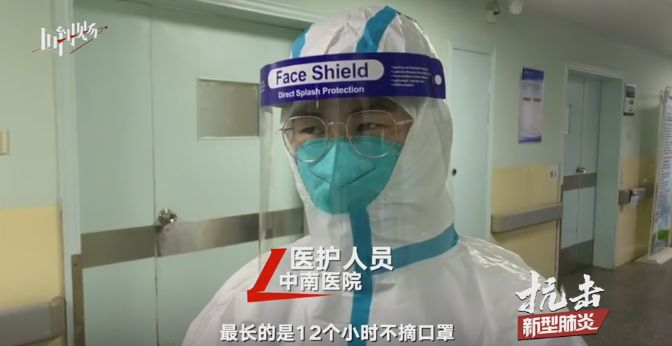
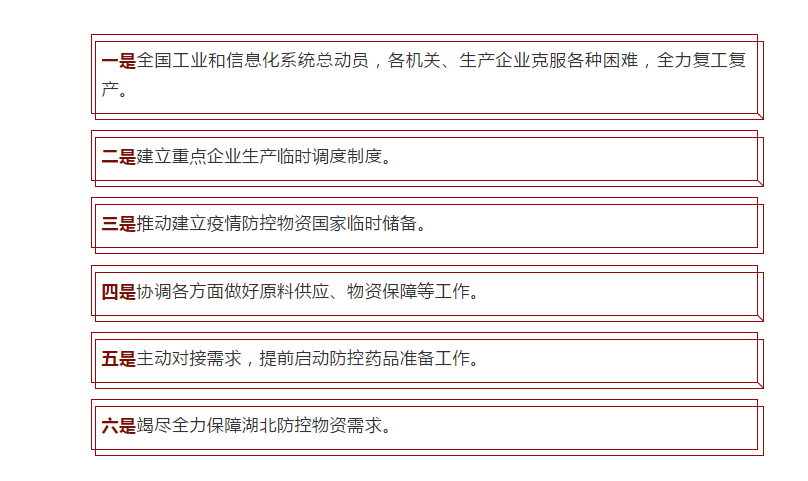

口罩告急！武汉医生每日发愁防护物资短缺
原文链接 备份链接 其他科室要尽量把医用口罩和防护服留给隔离病房的医护人员使用 2020年1月22日，在湖北省政府首场新型冠状病毒感染肺炎疫情防控工作新闻发布会上公布，新型冠状病毒感染的肺炎已致湖北17人死亡。图/新华 文 |《财经》 …

“医务人员，有很多做公共工作的（职业），一个人得病以后可能传染很多人。”国家卫健委高级别专家组成员曾光提醒，“所以每个行业都得行动起来，千万别带病工作、带病旅游，这是非常危险的。”
全文4811字，阅读约需8分钟
▲抗击新型肺炎一线医护人员：有人为方便穿防护服剪掉长发 有人主动推迟婚期。新京报我们视频出品（ID：wevideo）
从武汉回京前两天，王广发跑了几家医院的发热门诊和临时隔离病房，没有配备防护眼镜。
或许正是这个“致命”的疏漏，让他感染了病毒。
王广发是北京大学第一医院呼吸和危重症医学科主任，也是新型冠状病毒感染肺炎专家组成员，曾随国家卫健委专家组前往武汉。回京后，他于21日在院内接受检查，随后确诊。
王广发是目前北京唯一一名感染的医护人员。据武汉市卫健委通报，武汉新型冠状病毒肺炎传播以来，武汉已有15名医务人员确诊，另有1个疑似病例。
医务人员感染是重要标志。国家卫健委高级别专家组组长钟南山院士称，这说明肺炎出现了人传人的情况。
1月22日举行的国新办发布会上，国家卫健委相关负责人表示，出现医务人员感染案例，暴露出医疗机构在医院感染防控方面，确实还存在着一些薄弱环节。
━━━━━
北京出现首例医务人员感染
新型冠状肺炎疫情进入第22天。1月22日，武汉协和医院发热门诊人满为患，医护人员身穿白色防护服接诊，有医生连续工作了十几小时。
小小的门诊室里，排队问诊、检查的患者排起长龙，几乎挤满狭小的空间。医护人员胡湘（化名）不免担心：这里存在交叉感染的风险，医务人员也无法置身事外。

▲武汉协和医院发热门诊，排队问诊、检查的患者排起长龙。摄/新京报记者 许雯
在新型冠状病毒肺炎受到全国关注的前一周，北京的医院已经有所行动。
上周，昌平一家三甲医院呼吸科医生赵升（化名）接到医院通知，去参加一门新上线的培训课。
在北京市卫生健康委员会和北京预防医学会主办的北京市继续医学教育必修课平台上，这门“2020年新型冠状病毒感染的肺炎防治知识全员培训”课程被排在首位。课程包含4项课目，分别是“新型冠状病毒感染的肺炎监测和处置”“新型冠状病毒感染的肺炎诊疗方案”“新型冠状病毒 实验室和医护人员个人防护要求”和“新型冠状病毒感染的肺炎生物安全指南解读”。
“新型冠状病毒 实验室和医护人员个人防护要求”课目里，详细介绍了临床常用的个人防护装备，如眼罩、面屏、口罩、隔离衣，并讲解了诊疗期间需佩戴的装备、佩戴指南，以及相应国家标准。课程要求显示，必须观看教学视频，并通过线上考试，才能申请获得学分。
赵升告诉记者，北京所有的医生都要接受必修课培训。
1月20日凌晨，北京首次通报2例新型冠状病毒感染的肺炎病例，位于大兴区，均有武汉旅行史。傍晚，据北京市卫健委通报，全市确诊人数增加到5例。
次日，记者在北京多家医院看到，针对医务人员的防护措施已经升级。
“医院强调了防护要求，医生出诊必须戴外科口罩、帽子。”东城区一家三甲医院急诊科医生告诉记者。
北大医院急诊科医护人员的口罩，已经由平时的外科口罩升级为N95医用防护口罩。该院一位专家告诉记者，疫情发生后，医院向急诊、呼吸科、儿科急诊等高风险科室重点发放N95口罩等物资。分诊台护士戴上了帽子，穿上一次性隔离服，医院走廊、各诊区都使用清菌片进行消毒。同时，要求所有留观病人、陪护家属都戴上口罩。
“疫情发生后，防护级别提高了。”该专家说。
医院严阵以待，并非过度谨慎。在千里之外的武汉，此次疫情的发源地，已经有15名医护人员确诊感染。
在北京，也有医务人员遭到波及。1月22日，北京大学第一医院一位职工家属告诉新京报记者，前一日该院呼吸和危重症医学科主任王广发在院内接受影像学检查，之后，医院内部发布了确诊通知。
记者从该院另一位知情人士处核实，王广发确诊感染，并已在定点医院接受隔离。
22日夜里，王广发更新微博，称自己“经过1天的治疗，今天终于不发热了”。
━━━━━
“1传14”交叉感染事件
医务人员被感染，最早由钟南山透露。
1月20日下午，针对“新型冠状病毒感染的肺炎疫情”有关防控情况，国家卫健委高级别专家组组长钟南山院士等集体答记者问，他面对媒体首次证实：有医务人员感染。
后来陆续曝光的信息证实，14名医务人员被同一名患者传染。
1月21日下午，武汉市市长周先旺接受央视采访时，介绍了“1传14”事件的经过。
这次交叉感染发生在华中科技大学附属协和医院脑神经外科。正因为在脑神经外科，忽视了病人入院前已有新型冠状病毒感染。做完手术后，病人出现发烧，这时1名医生、13名护士已经被感染。
国家卫健委高级别专家组成员、香港大学微生物学讲座教授袁国勇院士指出，这种群组被感染的情况，反而较少会在内科或传染病科出现，因为这些科室医生会更加警惕。
据袁国勇了解，这名病人在脑外科接受治疗，但他可能与其他确诊患者密切接触过或者吃过野味，而未向医生陈述接触史。但入院时新型冠状病毒肺炎可能仍处于潜伏期，没有发烧或肺炎症状，导致医务人员未能提高警觉。
“这个教训很深刻，就是防控要做到疏而不漏，对每一个细节、每一个环节都要做到严格的防控。”周先旺说。

▲医护人员身穿全套防护服接诊患者。摄/新京报记者 许雯
回望17年前，历史有些相似。2002年12月22日，钟南山所在的广州医学院第一附属医院接收了一名来自广东河源的肺炎病人。两天后，在河源救治过该病人的8位医护人员，全部被感染。那是钟南山接触的第一例SARS病人。
此次发现的病毒与SARS同属于冠状病毒。世卫组织官网介绍，已知感染人的冠状病毒共有7种，其中4种致病性较低，还有2种就是SARS病毒（严重急性呼吸综合征）和MERS病毒（中东呼吸综合征），均曾引发疫情。
不论在SARS还是此次疫情中，医务人员感染都是非常重要的标志——肺炎出现了人传人的情况。
“医务人员，有很多做公共工作的（职业），一个人得病以后可能传染很多人。”国家卫健委高级别专家组成员曾光提醒，“所以每个行业都得行动起来，千万别带病工作、带病旅游，这是非常危险的。”
━━━━━
危险的“气溶胶”
医务人员一直是疫情感染高危人群。
世界卫生组织数据统计显示，全球超过20％的SARS感染者是医护人员。MERS爆发时, 医护人员感染风险同样很高，2014年2月17日-4月26日，沙特吉达出现的128例病例中，39例为医护人员。
原解放军四医大教授、全军呼吸学专家组成员吴昌归解释，医务人员有多种渠道会被感染肺炎病毒，包括直接接触，如摸到病人的手和身体，可能将病毒带到身上，进而进入医务人员的眼睛结膜或口腔中。
病毒也会通过飞沫传播，这些飞沫就是大气里飞扬的细碎颗粒。病毒依附在比其硕大几倍的飞沫上，被感染者呼吸到带有病毒的飞沫，病毒就进入身体。
“所以我们戴口罩能滤过飞沫，就起到了隔绝病毒的作用。”吴昌归提醒，卸口罩时不要摸口罩外部，以免接触到病毒。

▲《回到现场》探访武汉大学中南医院新型肺炎隔离病房，护士身着隔离服工作。视频截图 视频/新京报记者 马骏 赵志远
另一种我们不熟悉的传播介质，可能比飞沫更危险。
吴昌归解释，人类呼出的水分以气体形式弥漫在空气中，这些雾化的物质就叫“气溶胶”。其颗粒比飞沫还要小得多，可能直接进入医护人员的呼吸道，导致病毒传播。
东南大学钱华等人的研究显示，近十多年, 多次爆发的呼吸道传染病，反复说明，病人呼出的微生物气溶胶包含大量携带病原体的飞沫和飞沫核, 是呼吸道传染病传播的重要载体。
不过，北京市疾控中心北京全球健康中心办公室主任研究员杨鹏表示，此次疫情中，病毒能否通过气溶胶传播，需要进一步调查和研究。根据以往冠状病毒的特点，飞沫传播和接触传播是主要的传播形式。
不管传播途径如何，得到公认的是，一线医务人员是高风险群体，气管插管、气管切开等临床治疗手段，都属于高风险操作。北京地坛医院感染病急诊科主任王凌航认为，医务人员的抵抗力和常人无异，而冬春季除了新型肺炎，还叠加流感流行，这意味着较大的防控压力。
吴昌归认为，对于传染性肺炎，医务人员的感染风险显然大大高于普通人。“普通人接触到的是可能被传染肺炎病毒的环境，而医务人员直接面对肺炎病人，无论接触的是疑似病患还是确诊病患，感染风险都要高于普通人。”
━━━━━
“确实存在薄弱环节”
“看到医务人员感染的病例，我们也感到很痛心，医务人员确实是一个高风险的职业。”国家卫健委医政医管局负责人焦雅辉说。
王广发也很好奇自己是什么时候感染的病毒。在武汉工作期间，明明在医院时已经全程戴了N95口罩，甚至防溅屏，几乎“全副武装”。
他回想到，回京前2天去发热门诊和临时隔离病房时，没有配备防护眼镜。病毒也许就是趁着这个时间进入他的眼结膜。
1月22日举行的国新办发布会上，焦雅辉表示，出现医务人员感染案例，为人传人提供了证据。另一方面，也暴露出医疗机构在医院感染防控方面，确实还存在着一些薄弱环节。
焦雅辉解释，这与对病毒的危害和传播的认识，一开始没有达到这么高的等级有关。“我们对疾病的发展规律是逐渐认识的，这个疾病有发展和变化的过程，在早期和现在有不同特点，所以防护和医院感染控制措施也要进行相应调整。”
SARS时期也曾经历这一过程。
广东药学院公共卫生学院、中国疾控中心与广州市第八人民医院等单位联合开展的一项研究显示，第一次接触SARS患者时没有使用防护服、口罩、眼罩和手套的工作人员, 感染SARS的危险，明显高于使用防护用具的人员。
当年的疫情中，医务人员感染病毒的有一个明显变化曲线——大部分被感染的医务人员在2003年2月份确诊，3月份以后迅速减少。这是因为，疫情爆发后，医务人员加强了个人防护，政府部门也提出了综合预防控制措施。
“个人防护意识的建立和防护措施的到位，是降低感染的一个重要方面。”这项研究指出。
━━━━━
采取更严格的防控措施
央视记者近日探访武汉金银潭医院的重症监护隔离病房发现，医护人员要穿上隔离服、鞋套，戴上手套、口罩，进入病房要戴上N95口罩。进入重症病房前，医务人员要先后经过风淋通道、紫外线消毒区消毒。
“通常情况下，发热门诊要进行标准预防，为医护佩戴外科口罩。一旦接诊疑似病例，医疗机构应升级防护等级，包括佩戴N95口罩、防护服、面屏等。”杨鹏介绍。

▲《回到现场》探访武汉大学中南医院新型肺炎隔离病房，护士身着隔离服工作。视频截图 视频/新京报记者 马骏 赵志远
外科口罩可预防飞沫传播，N95口罩气密性更强，可预防气溶胶传播。
焦雅辉介绍，目前国家卫健委已经采取了一系列措施。一方面，修订和完善医务人员个人防护标准和规范；另一方面，提出了更加严格的医院感染防控措施。完善这些技术方案之后，还要对全国的医务人员进行培训。
吴昌归认为，从2003年防治SARS至今，17年过去，对医务人员的防护措施已经比较完备。“实际上，防护措施不需要很复杂，但再好的防护水平，也不可能把医护人员与患者完全隔绝，感染的风险不可能降低到零。”
▲直击武汉新型肺炎隔离病房：护士着防护服12小时 未喝过一口水。新京报我们视频出品（ID：wevideo）
“这次医务人员感染的出现也提示我们，不仅是在和病人感染相关的科室，在其他非感染相关的科室也要高度警惕医院感染防控和病人的早期发现。”焦雅辉说。国家卫健委将进一步采取更严格的防控措施，保障患者的救治，同时也保护医务人员的个人防护和安全。
不过，在市面上口罩遭到疯抢的应急时期，医院内部也同样面临困境。有医生告诉新京报记者，N95口罩物资紧张，并不能覆盖全员，目前主要只供应急诊科、呼吸科等主要科室。
记者探访北京协和医院时也发现，该院急诊、发热门诊医护人员佩戴N95口罩，在门诊大厅，则有不少医护人员戴着普通外科口罩走动。
“并不只有急诊、发热门诊、呼吸科能接触患者。”该医生指出，患者拍胸片、照CT时，检查科室的大夫与其接触，也有感染风险。
湖北的口罩存量也已“告急”。1月22日下午消息，由于本省只能生产医用口罩800万个，防护服200万套，红外测温仪1200套，不能满足全省防疫需要。湖北省拟向国家请求紧急支援，调拨医用口罩4000万个、防护服500万套、红外测温仪5000套。
▲武汉开通24小时接收社会捐赠热线 护目镜防护服等医用物资供应短缺。新京报我们视频出品（ID：wevideo）
1月23日，工信部官方发布消息称，根据疫情联防联控工作机制要求，1月23日凌晨，工业和信息化部已经安排中央医药储备向武汉市紧急调用1万套防护服、5万套手套。当日早晨，工业和信息化部党组成员、副部长王江平主持召开紧急会议，对当前重点工作进行了研判，当前要进一步强化六项措施：

*新京报记者 倪伟 戴轩 许雯 吴为 李玉坤 编辑 张畅 丁天 校对 李世辉*
点击”全国新型冠状病毒感染肺炎实时地图“或下方“阅读原文”
及时了解疫情最新粉分布情况
*值班编辑 吾彦祖*


本文未经新京报书面授权不得转载使用
欢迎朋友圈分享

原文链接 备份链接 其他科室要尽量把医用口罩和防护服留给隔离病房的医护人员使用 2020年1月22日，在湖北省政府首场新型冠状病毒感染肺炎疫情防控工作新闻发布会上公布，新型冠状病毒感染的肺炎已致湖北17人死亡。图/新华 文 |《财经》 …
原文链接 备份链接 1月4日，在尚无确诊病例的情况下，香港卫生署启动应变计划，将应变等级从“戒备”升为“严重”。几天后，香港修例以完善新型肺炎的呈报。香港政府发言人表示，将“严重新型传染性病原体呼吸系统病”纳入法定须呈报的传染病，提高监测 …
原文链接 备份链接 这是较早一批感染者之一，发病住院时还没有“新型冠状病毒”的称谓。经历17天隔离治疗，如今痊愈回家 2020年1月11日，工作人员在武汉华南海鲜批发市场西区（主要经营海鲜、水产等）进行检查。图/法新 文 |《财经》记者 …
原文链接 备份链接 发热门诊排起长龙的就诊队伍似乎在宣告，这座城市正面临一次巨大的挑战。 全文4742字，阅读约需9分钟 ▲湖北各地出现口罩防护服等防疫物资短缺 拟请求国家支援。新京报我们视频出品（ID：wevideo） 距离除夕还有3 …
原文链接 备份链接 截至20日晚上20点，境内累计确诊新型冠状病毒感染肺炎病例218例，疑似病例7例，死亡4例，治愈出院25例。 武汉共有15名医务人员确诊为新型冠状病毒感染的肺炎病例，另有1名为疑似病例。 国家卫健委高级别专家组组 …